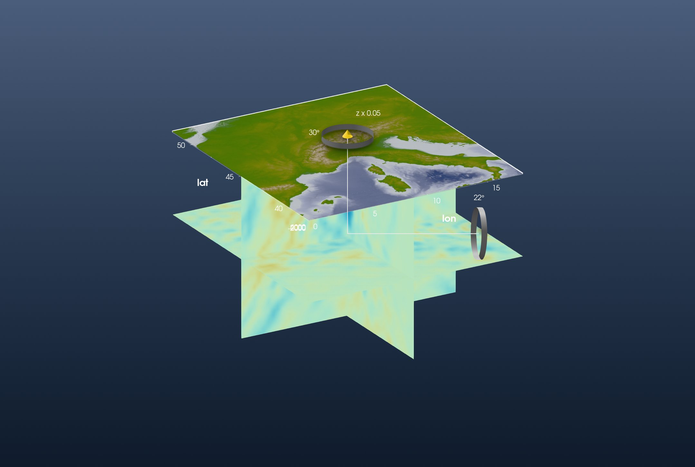
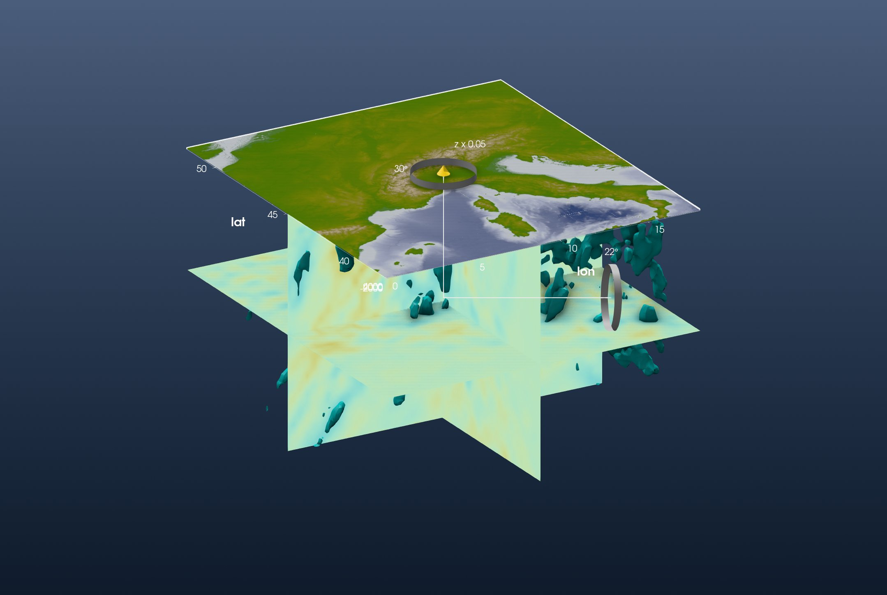

Tutorial: Slicing a Tomography Model
This is the GeophysicalModelGenerator.jl page Visualisation redone with iGMT and plain GMT.jl commands: no GMG, no GLMakie.
GMG's visualise widget shows a 3-D seismic velocity model as three orthogonal slices, one at a constant longitude, one at a constant latitude and one at a constant depth, under the topography. The model is Zhao et al.'s (2016) P-wave tomography of the Alps (Continuity of the Alpine slab unraveled by high-resolution P wave tomography, JGR Solid Earth).
1. Load the data
GMG loads the model from Zhao_Pwave.jld2, a file its own tomography tutorial writes. The data behind it is an ASCII table on GMG's data share, one row per node: longitude, latitude, depth (km, negative down) and the P-wave velocity anomaly in percent. gmtread reads it as it is:
using GMT, InteractiveGMT
download("https://seafile.rlp.net/d/a50881f45aa34cdeb3c0/files/?p=%2FZhao_etal_JGR_2016_Pwave_Alps_3D_k60.txt&dl=1",
"Zhao_etal_JGR_2016_Pwave_Alps_3D_k60.txt")
Zhao = gmtread("Zhao_etal_JGR_2016_Pwave_Alps_3D_k60.txt")The nodes are regular: 0° to 18° E and 38° to 51.95° N every 0.15°, and 1001 to 1 km deep every 10 km. The anomaly runs from −9.15 % to 8.96 %.
The topography is GMT's own 1′ earth relief over the same box:
Topo = grdcut("@earth_relief_01m", region=(0, 18, 38, 52))GMG colours the model with the roma scale over the data's full range:
C = makecpt(cmap=:roma, range=(-9.15, 8.96))2. Cut the three slices
A slice is the rows of the table on one plane, gridded by xyz2grd. The depth slice at 511 km keeps longitude, latitude and anomaly:
z511 = xyz2grd(Zhao[Zhao[:, 3] .== -511, [1, 2, 4]], region=(0, 18, 38, 51.95), inc=0.15)The vertical slices along 8.85° E and 44.9° N keep latitude (or longitude), depth and anomaly:
lon885 = xyz2grd(Zhao[Zhao[:, 1] .== 8.85, [2, 3, 4]], region=(38, 51.95, -1001, -1), inc=(0.15, 10))
lat449 = xyz2grd(Zhao[Zhao[:, 2] .== 44.9, [1, 3, 4]], region=(0, 18, -1001, -1), inc=(0.15, 10))grdimage with A=true turns each slice into its picture in the roma colours:
img511 = grdimage(z511, cmap=C, A=true)
imglon = grdimage(lon885, cmap=C, A=true)
imglat = grdimage(lat449, cmap=C, A=true)3. Put them in the scene
The topography opens the window:
fig = iview(Topo; cmap=:oleron)The depth slice is a flat grid 511 km down, wearing its picture. It is a depth on the same vertical scale as the topography, both in metres (samezscale=true). Adding it puts it on display; tick the topography (the Surface row) back on:
flat511 = grdmath("? 0 MUL -511000 ADD", z511)
add!(fig, flat511; name="dVp at 511 km", drape=img511, samezscale=true)
setvisible!(fig, "Surface")Every added grid brings its own axes, and one figure has one set, the topography's. Switch the slice's off:
setvisible!(fig, "Axes", false; layer="dVp at 511 km")The two vertical slices hang as curtains along their lines, from 1001 km to 1 km deep:
add_curtain!(fig, [8.85 38; 8.85 51.95]; image=imglon, zrange=(-1001000, -1000))
add_curtain!(fig, [0 44.9; 18 44.9]; image=imglat, zrange=(-1001000, -1000))The model is 1000 km deep under an 18° wide map, so it needs a small vertical exaggeration. View → Vertical Exaggeration… sets it on the topmost grid on display, the depth slice: set 0.05. Untick dVp at 511 km, set 0.05 again (now for the topography), and tick it back on. Switch to 3D and look at the model from the south-west:

The fast (blue) anomaly under the Alps is the subducted Alpine slab. On the 8.85° E curtain it is strongest (above 3 %) between 44.3° and 45.65° N, from about 20 km down to about 420 km.
4. The iso-surface
GMG's widget also draws an iso-surface: the surface where the anomaly crosses a value, 1.7 % in its figure. xyzw2cube reads the same table as a 3-D cube; its layer depths are in km, and the scene is in metres:
Cube = xyzw2cube("Zhao_etal_JGR_2016_Pwave_Alps_3D_k60.txt")
Cube.v .*= 1000add_isosurface! adds the surface as its own layer, on the topography's vertical scale. Like every added layer it becomes the layer on display; tick the others back on:
add_isosurface!(fig, Cube; level=1.7, color=:cyan, name="dVp = 1.7 %")
setvisible!(fig, "Surface")
setvisible!(fig, "dVp at 511 km")Ticking a layer back on ticks its axes too, so switch the slice's and the new surface's off again:
setvisible!(fig, "Axes", false; layer="dVp at 511 km")
setvisible!(fig, "Axes", false; layer="dVp = 1.7 %")Set the vertical exaggeration of the new layer to 0.05 as well, and switch to 3D:

This is GMG's figure. 24 135 of the model's nodes are faster than 1.7 %. Above 300 km they are centred on 11.3° E, 44.9° N, under the Po plain; 5676 of them lie below the 511 km slice.